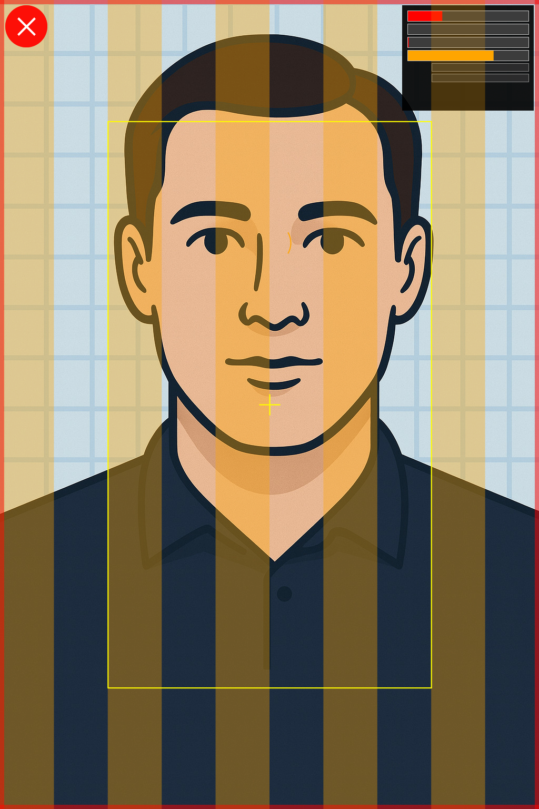
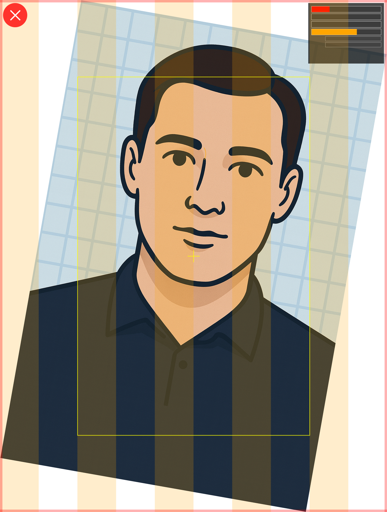
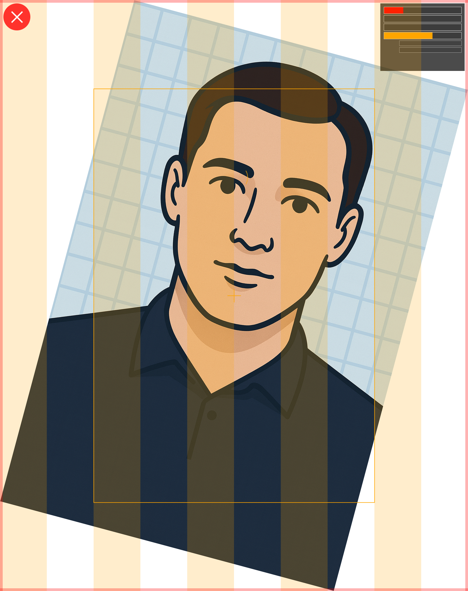
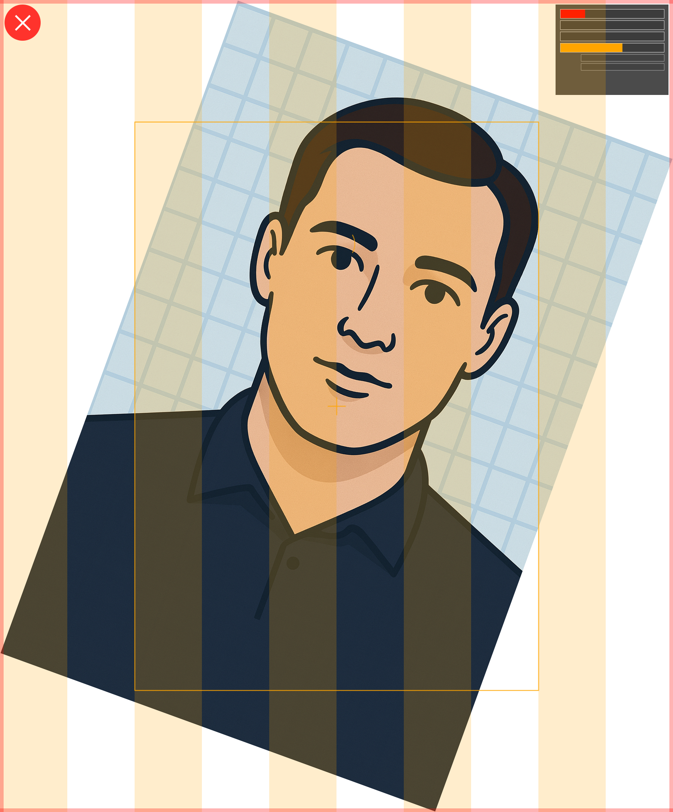
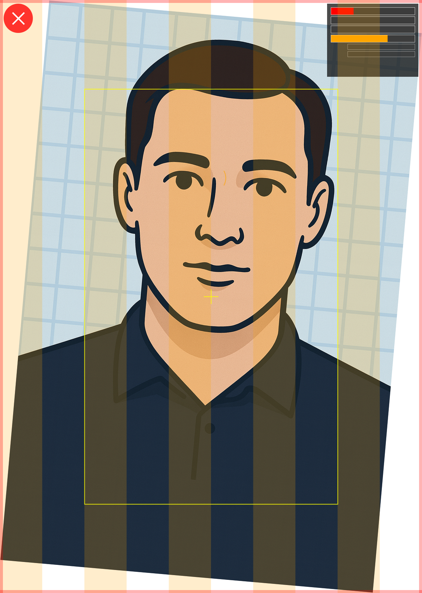
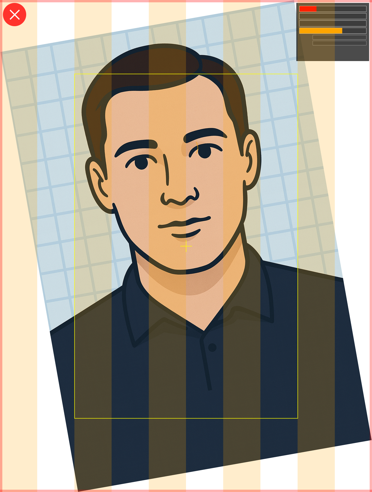
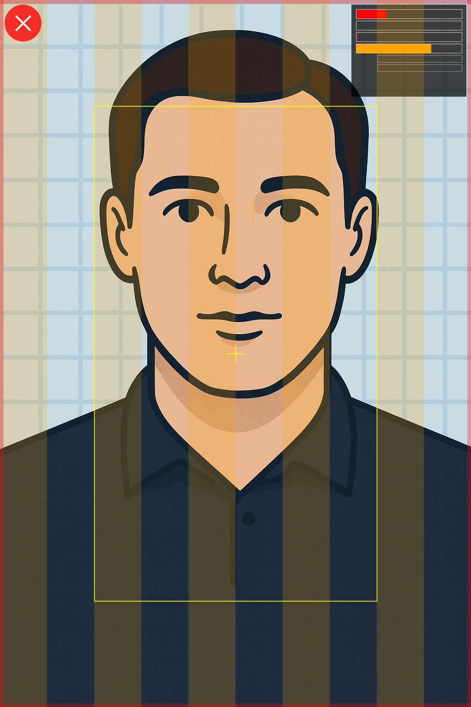
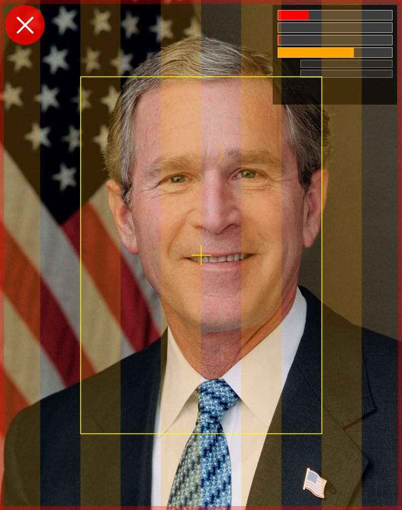
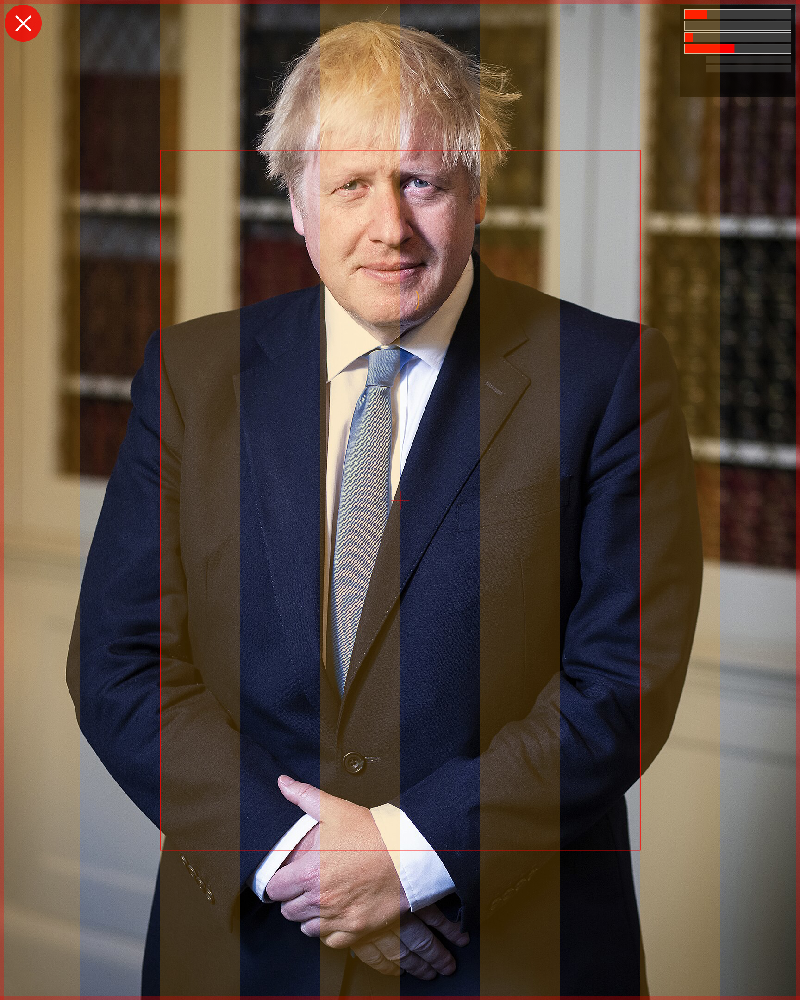

Generated:
| Image | Original | Quality Overlay | Overall | Symmetry | Sharpness | Geometry | Status | Violations |
|---|---|---|---|---|---|---|---|---|
| generic_guy_quality.png | |
 |
0.29 | 0.00 | 0.01 | 0.71 | ❌ Non-compliant | Symmetry: Facial symmetry score 0.0% is below acceptable threshold; Illumination: Uneven illumination detected; Pose: Non-frontal pose detected; Sharpness: Image sharpness 1.1% is below acceptable threshold; Sharpness: Face region has poor sharpness: 0.00; Geometry: Inter-pupillary distance is outside acceptable range; Dimensions: Image dimensions 1024x1536 differ from expected 420x560 |
| generic_guy_rotated_10.png | |
 |
0.26 | 0.00 | 0.00 | 0.65 | ❌ Non-compliant | Symmetry: Facial symmetry score 0.0% is below acceptable threshold; Illumination: Uneven illumination detected; Pose: Non-frontal pose detected; Sharpness: Image sharpness 0.3% is below acceptable threshold; Sharpness: Face region has poor sharpness: 0.00; Geometry: Inter-pupillary distance is outside acceptable range; Dimensions: Image dimensions 1278x1692 differ from expected 420x560 |
| generic_guy_rotated_15.png | |
 |
0.25 | 0.00 | 0.00 | 0.63 | ❌ Non-compliant | Symmetry: Facial symmetry score 0.0% is below acceptable threshold; Illumination: Uneven illumination detected; Pose: Non-frontal pose detected; Sharpness: Image sharpness 0.3% is below acceptable threshold; Sharpness: Face region has poor sharpness: 0.00; Geometry: Head size ratio 68.0% is outside acceptable range; Geometry: Inter-pupillary distance is outside acceptable range; Dimensions: Image dimensions 1388x1750 differ from expected 420x560 |
| generic_guy_rotated_20.png | |
 |
0.24 | 0.00 | 0.00 | 0.60 | ❌ Non-compliant | Symmetry: Facial symmetry score 0.0% is below acceptable threshold; Illumination: Uneven illumination detected; Pose: Non-frontal pose detected; Sharpness: Image sharpness 0.2% is below acceptable threshold; Sharpness: Face region has poor sharpness: 0.00; Geometry: Head size ratio 59.8% is outside acceptable range; Geometry: Inter-pupillary distance is outside acceptable range; Dimensions: Image dimensions 1490x1796 differ from expected 420x560 |
| generic_guy_rotated_5.png | |
 |
0.27 | 0.00 | 0.00 | 0.68 | ❌ Non-compliant | Symmetry: Facial symmetry score 0.0% is below acceptable threshold; Illumination: Uneven illumination detected; Pose: Non-frontal pose detected; Sharpness: Image sharpness 0.4% is below acceptable threshold; Sharpness: Face region has poor sharpness: 0.00; Geometry: Inter-pupillary distance is outside acceptable range; Dimensions: Image dimensions 1156x1622 differ from expected 420x560 |
| generic_guy_rotated_neg10.png | |
 |
0.26 | 0.00 | 0.00 | 0.64 | ❌ Non-compliant | Symmetry: Facial symmetry score 0.0% is below acceptable threshold; Illumination: Uneven illumination detected; Pose: Non-frontal pose detected; Sharpness: Image sharpness 0.3% is below acceptable threshold; Sharpness: Face region has poor sharpness: 0.00; Geometry: Inter-pupillary distance is outside acceptable range; Dimensions: Image dimensions 1278x1692 differ from expected 420x560 |
| generic_guy.png | |
 |
0.29 | 0.00 | 0.01 | 0.71 | ❌ Non-compliant | Symmetry: Facial symmetry score 0.0% is below acceptable threshold; Illumination: Uneven illumination detected; Pose: Non-frontal pose detected; Sharpness: Image sharpness 0.9% is below acceptable threshold; Sharpness: Face region has poor sharpness: 0.00; Geometry: Inter-pupillary distance is outside acceptable range; Dimensions: Image dimensions 1024x1536 differ from expected 420x560 |
| bush_photo.jpg | |
 |
0.27 | 0.00 | 0.02 | 0.67 | ❌ Non-compliant | Symmetry: Facial symmetry score 0.0% is below acceptable threshold; Illumination: Uneven illumination detected; Pose: Non-frontal pose detected; Sharpness: Image sharpness 1.7% is below acceptable threshold; Sharpness: Face region has poor sharpness: 0.00; Geometry: Inter-pupillary distance is outside acceptable range; Dimensions: Image dimensions 808x1024 differ from expected 420x560 |
| generic_guy.jpg | |
0.29 | 0.00 | 0.01 | 0.71 | ❌ Non-compliant | Symmetry: Facial symmetry score 0.0% is below acceptable threshold; Illumination: Uneven illumination detected; Pose: Non-frontal pose detected; Sharpness: Image sharpness 0.9% is below acceptable threshold; Sharpness: Face region has poor sharpness: 0.00; Geometry: Inter-pupillary distance is outside acceptable range; Dimensions: Image dimensions 1024x1536 differ from expected 420x560 | |
| johnson_photo.jpg | |
 |
0.21 | 0.00 | 0.08 | 0.47 | ❌ Non-compliant | Symmetry: Facial symmetry score 0.0% is below acceptable threshold; Illumination: Uneven illumination detected; Pose: Non-frontal pose detected; Sharpness: Image sharpness 8.2% is below acceptable threshold; Sharpness: Face region has poor sharpness: 0.09; Geometry: Head size ratio 43.7% is outside acceptable range; Geometry: Inter-pupillary distance is outside acceptable range; Dimensions: Image dimensions 1728x2160 differ from expected 420x560 |
| starmer_photo.jpg | |
|
0.17 | 0.00 | 0.00 | 0.42 | ❌ Non-compliant | Symmetry: Facial symmetry score 0.0% is below acceptable threshold; Illumination: Uneven illumination detected; Pose: Non-frontal pose detected; Sharpness: Image sharpness 0.3% is below acceptable threshold; Sharpness: Face region has poor sharpness: 0.00; Geometry: Head size ratio 19.1% is outside acceptable range; Geometry: Inter-pupillary distance is outside acceptable range; Dimensions: Image dimensions 7499x5002 differ from expected 420x560 |